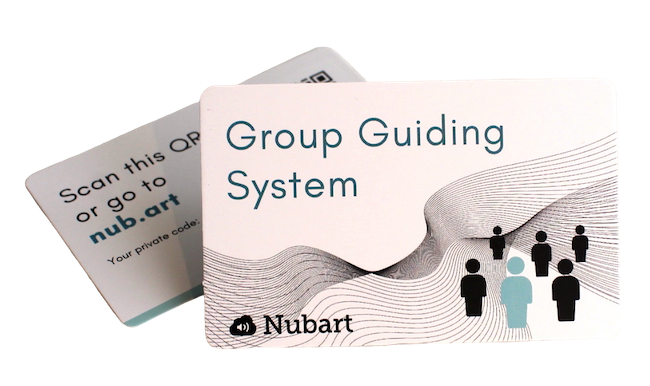
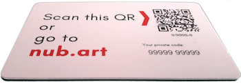

Najczęściej zadawane pytania dotyczące Nubart
Ogólne
Indywidualne kody wydrukowane na kartach działają jak klucz, który daje ekskluzywny dostęp do treści cyfrowych. Odwiedzający może zeskanować kod QR, aby uzyskać bezpośredni dostęp do treści lub, jeśli nie zna kodów QR, wprowadzić kod alfanumeryczny na stronie internetowej.
W firmie Nubart opracowaliśmy technologię LWAC(int. pat. pending), która czynić nasze karty nie zbywalne.
Korzystając z LWAC, zawartość może być pobierana tak często, jak jest to pożądane, zarówno ze smartfona, komputera lub tabletu, nawet miesiące lub lata po wizycie. Ale karta nie może być używana przez inną osobę.
W ten sposób zapewniamy, że audioprzewodnik ma wartość detaliczną i zagwarantować wysoką jakość gromadzonych przez nas anonimowych danych.
Ponadto, te unikalne kody pozwalają nam na dodanie całej gamy usług, które nie byłyby możliwe w przypadku konwencjonalnego PWA: system prowadzenia grup, gra Catch & Answer, specjalne zniżki dla posiadaczy kart...
W firmie Nubart opracowaliśmy technologię LWAC(int. pat. pending), która czynić nasze karty nie zbywalne.
Korzystając z LWAC, zawartość może być pobierana tak często, jak jest to pożądane, zarówno ze smartfona, komputera lub tabletu, nawet miesiące lub lata po wizycie. Ale karta nie może być używana przez inną osobę.
W ten sposób zapewniamy, że audioprzewodnik ma wartość detaliczną i zagwarantować wysoką jakość gromadzonych przez nas anonimowych danych.
Ponadto, te unikalne kody pozwalają nam na dodanie całej gamy usług, które nie byłyby możliwe w przypadku konwencjonalnego PWA: system prowadzenia grup, gra Catch & Answer, specjalne zniżki dla posiadaczy kart...

Ścieżki dźwiękowe naszych audioprzewodników są przesyłane strumieniowo, co oznacza, że tylko ścieżki, na które kliknął użytkownik, zużywają dane mobilne. To odróżnia nas od wielu aplikacji, które wymagają pobrania całej zawartości. Kliknięte ścieżki dźwiękowe zużywają 0,46 MB na minutę, czyli 5 razy mniej niż serwisy streamingowe takie jak Spotify.
Jeśli więc w Twoim domu jest dobry zasięg danych, nie musisz oferować gościom darmowego Wi-Fi, aby móc zaoferować im nasze audioprzewodniki, zwłaszcza że obywatele UE nie muszą już płacić za roaming.
Jednakże, opracowaliśmy tryb offline dla domów o słabym zasięgu sieci. W naszym trybie offline wszystkie ścieżki dźwiękowe są tymczasowo pobierane do pamięci RAM telefonu komórkowego bez konieczności instalowania aplikacji. W ten sposób ścieżki dźwiękowe po pobraniu mogą być odsłuchiwane w trybie offline.
Jeśli więc w Twoim domu jest dobry zasięg danych, nie musisz oferować gościom darmowego Wi-Fi, aby móc zaoferować im nasze audioprzewodniki, zwłaszcza że obywatele UE nie muszą już płacić za roaming.
Jednakże, opracowaliśmy tryb offline dla domów o słabym zasięgu sieci. W naszym trybie offline wszystkie ścieżki dźwiękowe są tymczasowo pobierane do pamięci RAM telefonu komórkowego bez konieczności instalowania aplikacji. W ten sposób ścieżki dźwiękowe po pobraniu mogą być odsłuchiwane w trybie offline.
Tak, możemy stworzyć indywidualny layout dla Twojej firmy, w którym możesz określić m.in. kolory, czcionki, odtwarzacz, odstępy między elementami oraz obramowanie dla zdjęć.
Ta specjalna produkcja jest odpłatna.
Ta specjalna produkcja jest odpłatna.
W Nubart dbamy o środowisko!
Możesz wybrać przyjazny dla środowiska materiał, na którym chcesz wydrukować swoje karty:
Możesz wybrać przyjazny dla środowiska materiał, na którym chcesz wydrukować swoje karty:
- PVC z recyklingu.
- Ultrakompaktowa, specjalna tektura z certyfikatem FSC.
- Bio-PVC ulega biodegradacji.
Tak, są!
Kod QR na karcie jest wydrukowany w formie wypukłej, dzięki czemu osoby niedowidzące mogą go rozpoznać opuszkami palców i uchwycić za pomocą skanera QR.
Nasz autorski CMS został opracowany w technologii Universal Design.
Więcej szczegółów można znaleźć na naszym blogu:
Przewodniki audio firmy Nubart są dostępne
Kod QR na karcie jest wydrukowany w formie wypukłej, dzięki czemu osoby niedowidzące mogą go rozpoznać opuszkami palców i uchwycić za pomocą skanera QR.
Nasz autorski CMS został opracowany w technologii Universal Design.
Więcej szczegółów można znaleźć na naszym blogu:
Przewodniki audio firmy Nubart są dostępne
Audioprzewodniki
Wiemy, że większość muzeów cierpi na niedobór personelu i ma bardzo duże obciążenie pracą.
Naszym celem jest maksymalne zmniejszenie tego obciążenia.
Zazwyczaj potrzebujemy tylko zdjęć i kilku informacji od Ciebie. My zajmie się wszystkim innym, informując Cię o procesie i szukać Twoja zgoda na poszczególnych etapach. Materiały potrzebne firmie Nubart do przygotowania audioprzewodnika
Naszym celem jest maksymalne zmniejszenie tego obciążenia.
Zazwyczaj potrzebujemy tylko zdjęć i kilku informacji od Ciebie. My zajmie się wszystkim innym, informując Cię o procesie i szukać Twoja zgoda na poszczególnych etapach. Materiały potrzebne firmie Nubart do przygotowania audioprzewodnika
Muzea mogą rozprowadzać karty audioprzewodników na różne sposoby.
Na przykład:
Na przykład:
- Dołącz bilety do opłaty za wstęp i rozdawaj je bezpłatnie zwiedzającym.
- Bilety bezpłatne w ramach akcji partnerstwo sponsoringowe dać.
- Sprzedaż biletów po cenie pokrywającej koszty dodatkowe dla zwiedzających
- Sprzedaż kart z zyskiem
Naszym najczęstszym modelem jest sprzedaż map jako produktu, z prawie wszystkimi naszymi cyfrowymi funkcjami. W każdej chwili możesz ponownie zamówić nowe karty audioguide.
Dla zajętych muzeów, które chcą wycenić kartę audioguide do wstępu, możemy zaoferować umowę ryczałtową.
Dla muzeów i atrakcji z więcej niż 100.000 odwiedzających rocznie, które chcą sprzedać kartę jako dodatek, możemy rozważyć udział w przychodach.
.
Dla zajętych muzeów, które chcą wycenić kartę audioguide do wstępu, możemy zaoferować umowę ryczałtową.
Dla muzeów i atrakcji z więcej niż 100.000 odwiedzających rocznie, które chcą sprzedać kartę jako dodatek, możemy rozważyć udział w przychodach.
.
W dzisiejszych czasach większość ludzi nosi przy sobie własne słuchawki. Jeśli jednak tak nie jest, Twoi goście mogą zmniejszyć głośność i zamiast używać smartfona jak telefonu, mogą przyłożyć dolny głośnik do ucha. Ponieważ audioprzewodniki mają krótkie ścieżki dźwiękowe, których słucha się oddzielnie, a nie w sposób ciągły, jak książki audio czy muzyki, nie stanowi to dużego problemu. Wielu z naszych klientów nie oferuje słuchawek.
Jeśli jednak uważacie, że mini słuchawki są niezbędne w Waszym muzeum, możecie je u nas zamówić, a być może nawet zamówić pudełko na nie z logo Waszego muzeum.

Jeśli jednak uważacie, że mini słuchawki są niezbędne w Waszym muzeum, możecie je u nas zamówić, a być może nawet zamówić pudełko na nie z logo Waszego muzeum.
Obecnie nasz system obsługuje ponad 25 języków.
Jeśli chciałbyś dodać język, który nie jest jeszcze obsługiwany, z przyjemnością to zrobimy bez dodatkowych kosztów.
Jeśli chciałbyś dodać język, który nie jest jeszcze obsługiwany, z przyjemnością to zrobimy bez dodatkowych kosztów.
System zarządzania grupą - Nubart Live
Około 20 MB na godzinę. O wiele mniej niż słuchanie muzyki przesyłanej strumieniowo lub oglądanie filmów!
Oczywiście! Nasze minimalne zamówienie na personalizowane karty to 3.000 sztuk.
Jeśli podoba Ci się poniższy wzór Nubart, wydrukowany w sposób przyjazny dla środowiska na bardzo mocnej karcie, nasze minimalne zamówienie wynosi 500 sztuk.
Jeśli wolisz spersonalizowane karty, minimalne zamówienie wynosi 3 000.
Jeśli wolisz spersonalizowane karty, minimalne zamówienie wynosi 3 000.

Kupując nasze karty z nadrukiem Nubart, otrzymujesz dostęp dla dwóch przewodników na każde zamówienie 500 kart. Im więcej kart zamówisz, tym więcej przewodników będzie miało dostęp do naszego systemu.
Jeśli wykupisz nasz profesjonalny pakiet 5000 kartek, liczba przewodników jest nieograniczona.
Jeśli wykupisz nasz profesjonalny pakiet 5000 kartek, liczba przewodników jest nieograniczona.
Niewielkie opóźnienie, mniejsze niż jedna sekunda, pomiędzy nadawcą a odbiorcą (latencja) jest nieuniknione podczas komunikacji przez Internet, niezależnie od tego, czy używasz aplikacji czy systemu opartego na przeglądarce, takiego jak Nubart. Prawdopodobnie znasz to z programów Skype, Zoom lub podobnych systemów.
Na opóźnienie ma wpływ kilka czynników, takich jak wydajność smartfona i jakość połączenia internetowego.
Zalecamy, aby przewodnicy mówili jak najciszej, aby uniknąć niepokojącego efektu echa: głos odbierany przez smartfon powinien dominować wśród uczestników.
Na opóźnienie ma wpływ kilka czynników, takich jak wydajność smartfona i jakość połączenia internetowego.
Zalecamy, aby przewodnicy mówili jak najciszej, aby uniknąć niepokojącego efektu echa: głos odbierany przez smartfon powinien dominować wśród uczestników.

Technicznie rzecz biorąc, moglibyśmy generować indywidualne QR i skanować je z poziomu smartfona, jak cyfrową kartę pokładową. Jest jednak kilka dobrych powodów, które przemawiają za naszymi kartami:
- Nie każdy wie, jak zeskanować kod QR. Nasza karta oferuje alternatywny sposób poprzez wprowadzenie kodu alfanumerycznego.
- Zawsze znajdzie się ktoś, kto dołączy z opóźnieniem: ponieważ nasza karta jest zrozumiała, przewodnik musi ją tylko szybko zeskanować i bezszelestnie wręczyć nowoprzybyłemu. Żaden system wyłącznie cyfrowy nie byłby tak gładki!
- Uczestnicy mają możliwość ponownego wpisania lub zeskanowania kodu w dowolnym momencie w przypadku problemów z telefonem komórkowym (np. rozładowana bateria).
- Karty nie są zbywalne, ale uczestnik może ponownie wykorzystać swoją kartę na kilka wycieczek.
Jeśli chcesz odebrać połączenie, po prostu kliknij na "Mute" z nami i odbierz.
Podczas nawiązywania połączenia grupa pozostaje zawieszona. Po zakończeniu rozmowy wróć do przeglądarki. Jeśli nie widzisz wszystkich uczestników grupy z zielonym światłem, po prostu przeładuj stronę: Wszystkie połączenia są automatycznie przywracane bez konieczności ponownego skanowania kodów QR uczestników.
Ostrożnie! Jeśli używasz Androida i zapomnisz kliknąć "Wycisz" na Przewodniku na żywo, uczestnicy będą mogli usłyszeć, co mówisz do rozmówcy. Z drugiej strony, jeśli używasz iPhone'a, ani Ty, ani rozmówca nie będziecie słyszani przez grupę.
Podczas nawiązywania połączenia grupa pozostaje zawieszona. Po zakończeniu rozmowy wróć do przeglądarki. Jeśli nie widzisz wszystkich uczestników grupy z zielonym światłem, po prostu przeładuj stronę: Wszystkie połączenia są automatycznie przywracane bez konieczności ponownego skanowania kodów QR uczestników.
Ostrożnie! Jeśli używasz Androida i zapomnisz kliknąć "Wycisz" na Przewodniku na żywo, uczestnicy będą mogli usłyszeć, co mówisz do rozmówcy. Z drugiej strony, jeśli używasz iPhone'a, ani Ty, ani rozmówca nie będziecie słyszani przez grupę.
Synchronizacja audio-wideo w oparciu o przeglądarkę
Jeśli obawiasz się, że Twoje filmy mogą być pirackie, możesz być pewien, że nasza platforma oferuje znacznie bezpieczniejsze rozwiązanie niż typowe platformy hostingowe: Nie musisz nawet przesyłać oryginału!
Aby odtwarzać wideo na miejscu, możesz odtwarzać oryginalne wideo z lokalnego dysku twardego i nigdy nie opuści ono lokalnego komputera. Umożliwia to również odtwarzanie przy niskiej przepustowości łącza internetowego. Jedynym wymogiem dotyczącym filmu, który przesyłasz na naszą platformę, jest to, że musi on mieć dokładnie taką samą długość jak oryginał, ale może (i powinien) być wersją o niskiej rozdzielczości, nawet ze znakami wodnymi lub innymi modyfikacjami. Przesłane wideo jest tylko po to, aby upewnić się, że wideo i towarzyszące mu pliki audio mp3 są zsynchronizowane.
Aby odtwarzać wideo na miejscu, możesz odtwarzać oryginalne wideo z lokalnego dysku twardego i nigdy nie opuści ono lokalnego komputera. Umożliwia to również odtwarzanie przy niskiej przepustowości łącza internetowego. Jedynym wymogiem dotyczącym filmu, który przesyłasz na naszą platformę, jest to, że musi on mieć dokładnie taką samą długość jak oryginał, ale może (i powinien) być wersją o niskiej rozdzielczości, nawet ze znakami wodnymi lub innymi modyfikacjami. Przesłane wideo jest tylko po to, aby upewnić się, że wideo i towarzyszące mu pliki audio mp3 są zsynchronizowane.